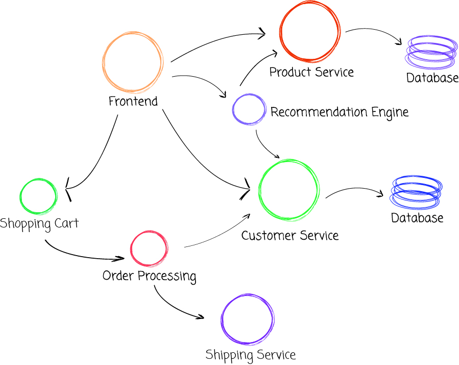
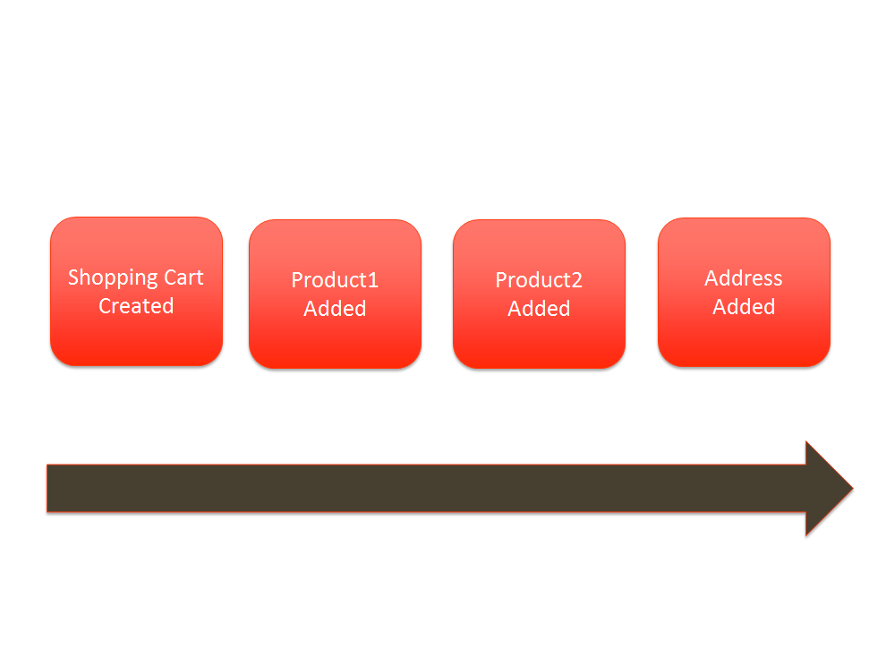
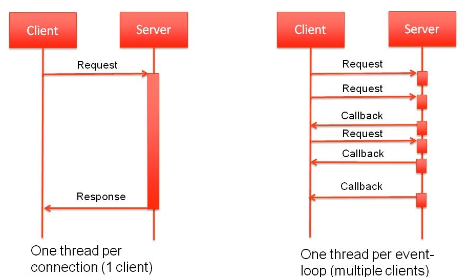
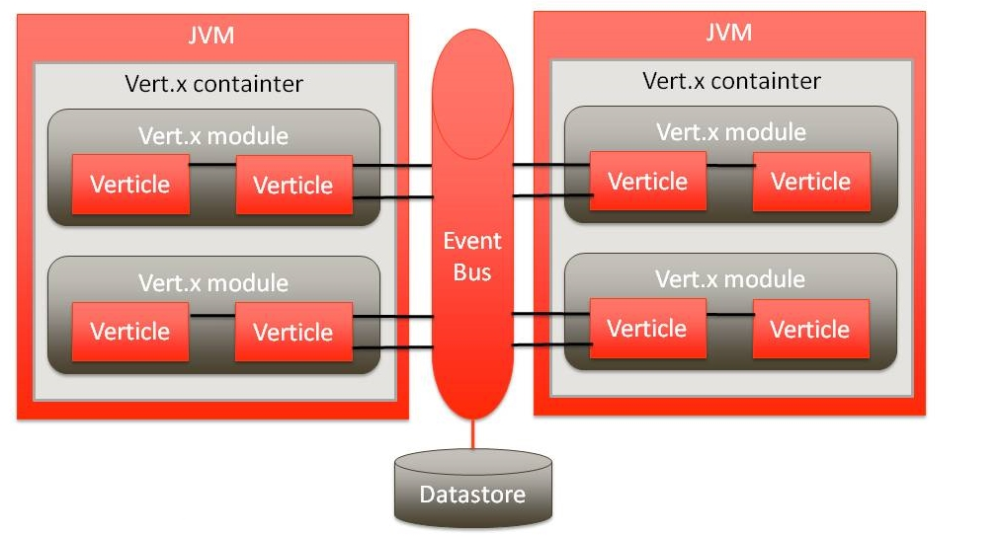

Vert.x
Reactive, event-driven applications on the JVM
Erwin de Gier | Software Architect | Open Source
Demands
- Mobile
- Multicore
- Cloud computing
- Interactive & real-time
- Responsive
- Collaborative
- Realtime
- Data increase
Trends
Microservices
Scalable
Event driven
“Vert.x is a toolkit for creating reactive applications on the JVM, supporting multiple development languages simultaneously.”
Microservices

Microservices
- Run as standalone JAR file or in vert.x runtime
- Support for Java, Ruby, Javascript, Groovy, etc.
- Deploy and Undeploy seperate services at runtime
- Dropwizard style Metrics
Event driven

Event driven
- Services subscribe to events
- Thread is free until an event needs to be handled
- Distributed event-bus
Scalable
Scalable

Architecture

Hello World
public class PublisherVerticle extends AbstractVerticle {
@Override
public void start() throws Exception {
vertx.setPeriodic(1000, arg -> {
vertx.eventBus().publish("event",
new JsonObject().put("eventmessage", "hello world"));
});
}
}
Demo
- Core API
- Vert.x-web
- Persistency
- Vert.x-unit
- Metrics
- Shell interaction
“Looking for a Microservices toolkit? Reactive, Scalable and Event Driven? Needs to run on the JVM?”
 github.com/erwindeg/vertx3-whatsnew
erwindeg.github.io/presentations/vertx-intro
github.com/erwindeg/vertx3-whatsnew
erwindeg.github.io/presentations/vertx-intro